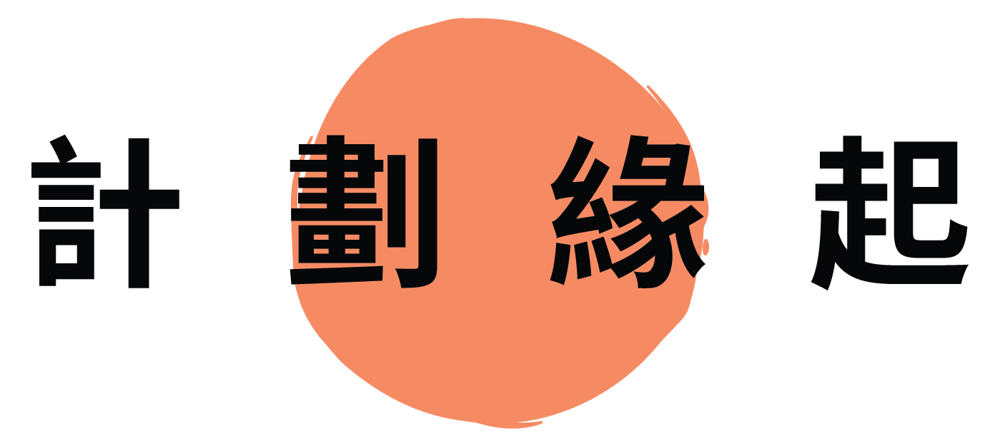
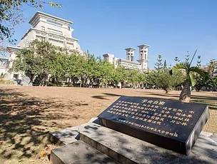

一所好的大學，不僅僅是研究學術、培育人才，它更重
要的使命是提昇文化及服務社會。
深耕在地、扮演區域發展的智庫是我們的責任。
讓大學生能夠「走入在地」，注入熱血與能量，讓我們 一一同參與區域的發展，培養認同、實踐想像，與地方 發生關係。
讓大學生能夠「走入在地」，注入熱血與能量，讓我們 一一同參與區域的發展，培養認同、實踐想像，與地方 發生關係。
The responsibility of a great University is not
cultivating the talented or to do academic research
only. Being an institution, the greater purpose
should be promoting local culture and serve the
society. We believe, By letting students to connect
with the local (or area) could be en - couraging, not
only to the students only, but also to the local area.
And together, we could build a better nation, a
better world.
